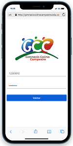
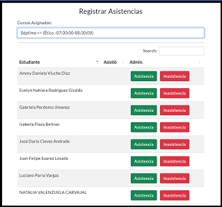

Mapa de Procesos - G.C.C.
Se recomienda visualizar el mapa en una pantalla no menor a 1200px
Dar click en cada uno de los procesos para visualizar los subprocesos.
Misionales
Estratégicos
Apoyo
Coherencia Teórica del Modelo de Gestión Educativa
La Institución Educativa Gimnasio Colina Campestre se ha caracterizado desde un principio por incluir dentro de sus estrategias, el uso de herramientas tecnológicas que sirvan como apoyo para llevar a cabo todos los procesos, tanto administrativos como pedagógicos y enmarcados dentro de un proceso de educación inclusiva.
Durante los últimos dos años, el colegio ha venido invirtiendo importantes recursos para el desarrollo de una plataforma propia que le permita adaptar la aplicación web a los estándares de la Institución y no que la Institución se adapte a módulos tipo plantilla que dificultan los procesos pedagógicos innovadores que lleva a cabo. Debido a esto, en Octubre del 2022, el colegio llevó a cabo una alianza con Amazon Web Services, empresa que se dedica al apoyo de empresas que estén interesadas en escalar sus procesos y llevarlos a la nube, favoreciendo la escalabilidad y ahorrando costos ya que toda la infraestructura de servicios (Servidores, Dominios, Bases de Datos) los administra directamenete AWS ofreciendole a la I.E. soporte, confiabilidad y accesibilidad a los servicios suministrados.
Actualmente en la I.E. ya se han implementado varios módulos, tales como planeaciónes pedagógicas, Asistencias, Informes, Compra de Almuerzos y se viene trabajando y llevando a cabo pruebas con un módulo llamado Agenda de Aula, la cual va a permitir que los padres de familia semanalmente puedan revisar los avances y novedades que tenga el estudiante.
Instrumento de Evaluación
El instrumento de evaluación se va a llevar a cabo a traves de una lista de chequeopara verificar el alcance de los objetivos propuestos
Marcar con una x si la condición se cumplePlan de Acción
| Nombre de la Institución Educativa | Gimnasio Colina Campestre |
|---|---|
| Carácter | Privada |
| Ubicación(Urbana / Rural) | Rural |
| Modelo de Gestión | Modelo Comunicacional |
| Objetivo Estratégico | Formación con enfoque neuropedagógico utilizando metodologías innovadoras que fomenten la inclusión y la calidad educativa y de esta forma convertir al G.C.C. en la institución educativa con mayor proyección y reconocimiento de la región. |
| Estrategias para vincular herramientas |


Cada vez mas procesos se llevan a cabo desde el sitio web de la Institución. Las planeaciones pedagógicas, las asistencias, la venta de los almuerzos para los niños y actualmente nos encontramos trabajando en una herramienta que permita a traves de un módulo llamado agenda, la comunicación semanal con los padres de familia para que puedan visualizar todos los temas vistos con sus hijos y que actividades quedan pendientes para desarrollar o reforzar desde casa. |
| Actividades | La comunicación con los padres es permanente para el desarrollo de actividades. Los padres hacen parte activa del proceso de aprendizaje del menor a traves de actividades en las cuales se involucra toda la familia. |